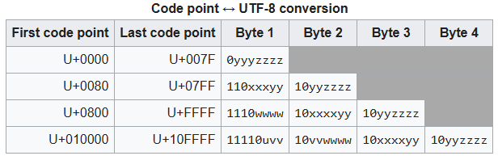

s = "How are you?"
print(s)How are you?Mark Cassar
December 18, 2024
My goal is to get a deeper understanding of tokenization as it relates to the preprocessing of text for input into a large language model (LLM). I had heard of byte pair encoding (BPE) but became more interested as I was reading Sebastian Raschka’s book Build a Large Language Model (from Scratch) (highly recommended). I then came across Andrej Karpathy’s incredible set of lectures From Zero to Hero, which includes a video on building the GPT2 tokenizer.
What I am doing here is nothing original, just my attempt to process and understand as fully as possible the concepts I have been learning recently.
So, let’s start with some text:
Unfortunately, text is never just ‘text’; there must be a mapping between binary numbers and characters, since all computers store information as binary numbers.
When I look into the Python documentation, I discover that Python handles text as str (or string) objects; and further, that “Strings are immutable sequences of Unicode code points.” To access the Unicode code points, we can use the ord() function.
s_list = list(s)
code_pts = [ord(ch) for ch in s]
print(s_list, end=" ")
print()
print(code_pts, end=" ")['H', 'o', 'w', ' ', 'a', 'r', 'e', ' ', 'y', 'o', 'u', '?']
[72, 111, 119, 32, 97, 114, 101, 32, 121, 111, 117, 63] The Unicode standard is an attempt to create a single system to represent all characters used in human communication. That is, to allow people to talk to each other how they naturally would regardless of the device they are using. This means the characters of all human languages, as well as things like emojis and mathematical symbols:
The standard consists of assigning a unique code point to each character. This is not an actual encoding, as it does not specify how this gets implemented on any computer hardware. Python displays these code points as decimal numbers, although the standard uses the notation U+ followed by a hexadecimal value.
So the two characters above would have code points U+1F600 and U+27FA, respectively (‘0x’ is how Python designates a hexadecimal value).
Now, since Unicode is not an encoding, my question was, how does Python know how to get from the characters to the code points? I think the answer is specified in the docs: “A Unicode string is a sequence of code points, which are numbers from 0 through 0x10FFFF (1,114,111 decimal). This sequence of code points needs to be represented in memory as a set of code units, and code units are then mapped to 8-bit bytes. The rules for translating a Unicode string into a sequence of bytes are called a character encoding, or just an encoding.”
It seems the answer is that Python assumes the text is encoded using UTF-8 and that the encoding is done natively under the hood. UTF stands for Unicode Transformation Format and the 8 stands for 8-bit.
The conversion between Unicode code points and UTF-8 is given the table from the Wikipedia page listed above:

I need to keep a couple things in mind here: - UTF-8 operates at the single byte level, and - Unicode code points range from U+0000 to U+10FFFF, which in integers is from 0 to 1114111 (int(0x10ffff), noting that 0x10ffff is Python’s hexadecimal equivalent to U+10FFFF)
Given the range of code points, this means that UTF-8 needs more than one byte to represent any code point above (theoretically) 255; However, UTF-8 uses more than one byte to represent any code point above 127. This is done to maintain backward compatibility with ASCII, which only used values from 0 to 127.
To see this in action, I’ll modify the text so it includes characters that require 1, 2, 3, and 4 bytes in UTF-8:
Now I want to see the code points for these characters, also noting that there are 18 characters in the text.
unicode_code_points = [ord(ch) for ch in s]
hex_values = [hex(pt) for pt in unicode_code_points]
print(f"Num chars: {len(unicode_code_points)}, Code pts: {unicode_code_points}")
print(f"Num chars: {len(hex_values)}, Code pts in hex: {hex_values}")Num chars: 18, Code pts: [72, 111, 119, 32, 97, 114, 101, 32, 121, 111, 117, 63, 32, 1009, 32, 2332, 32, 128512]
Num chars: 18, Code pts in hex: ['0x48', '0x6f', '0x77', '0x20', '0x61', '0x72', '0x65', '0x20', '0x79', '0x6f', '0x75', '0x3f', '0x20', '0x3f1', '0x20', '0x91c', '0x20', '0x1f600']For the moment, I want to look at the code points that are above 127, which are 1009, 2332, and 128512. Looking up these code points will often require the hexadecimal equivalent: - 1009 = 0x3f1 = U+3F1 - 2332 = 0x91c = U+91C - 128512 = 0x1f600 = U+1F600
To clarify this, I will note the equivalence mathematically. First, I note again that the prefix ‘0x’ is Python’s way of denoting a hexadecimal number. Thus, the values after that define the actual number. Second, I need to remember that in hexadecimal, we need to use the first few characters of the alphabet to represent the numbers from 10 to 15, so A=10, B=11, C=12, D=13, E=14, and F=15. So, we have:
\[ \begin{align*} \rm{0x3f1} &= 3 \times 16^2 + 15 \times 16^1 + 1 \times 16^0 \\ &= 3 \times 256 + 15 \times 16 + 1 \times 1 \\ &= 768 + 240 + 1 \\ &= 1009\\ \\ \rm{0x91c} &= 9 \times 16^2 + 1 \times 16^1 + 12 \times 16^0 \\ &= 9 \times 256 + 1 \times 16 + 12 \times 1 \\ &= 2304 + 16 + 12 \\ &= 2332\\ \\ \rm{0x1f600} &= 1 \times 16^4 + 15 \times 16^3 + 6 \times 16^2 + 0 \times 16^1 + 0 \times 16^0 \\ &= 1 \times 65536 + 15 \times 4096 + 6 \times 256 + 0 + 0 \\ &= 65536 + 61440 + 1536 \\ &= 128512 \end{align*} \]
I can also check the correspondence between these code point values and the characters that printed using the following tables: - for 1009 see Greek and Coptic - for 2332 (use hex value U+91C) see Devanagari - for 128512 (use hex value U+1F600) see Emoji
Now when I look at the same text encoded in UTF-8, I see:
24 b'How are you? \xcf\xb1 \xe0\xa4\x9c \xf0\x9f\x98\x80'
24 [72, 111, 119, 32, 97, 114, 101, 32, 121, 111, 117, 63, 32, 207, 177, 32, 224, 164, 156, 32, 240, 159, 152, 128]I now have 24 bytes, instead of 18 characters, and notice that all of the code point values are below 256 (which is expected if every value comes from a single byte). What I find confusing is reconciling this with what I just did above. To make sense of it, I need to recall the code point to UTF-8 conversion table above, and bring in binary numbers.
Note what happens when I try to convert the UTF-8 encoded bytes as if they were code points:
['H', 'o', 'w', ' ', 'a', 'r', 'e', ' ', 'y', 'o', 'u', '?', ' ', 'Ï', '±', ' ', 'à', '¤', '\x9c', ' ', 'ð', '\x9f', '\x98', '\x80']Everything is ok up until we hit the Greek letter rho, ϱ. The problem here is that chr() is the reverse of ord() and so it only operates properly on code points, not UTF-8 bytes. To see this, we can use our earlier code point values:
That looks better! But how do I reconcile these two approaches. I’ll first isolate our “problem” characters.
b'\xcf\xb1 \xe0\xa4\x9c \xf0\x9f\x98\x80'[207, 177, 32, 224, 164, 156, 32, 240, 159, 152, 128]I know that a space character, ” “, is represented by code point 32, so it seems that we have: 1. ϱ somehow equivalent to two code points 207, 177 2. ज somehow equivalent to three code points 224, 164, 156 3. 😀somehow equivalent to the four code points 240, 159, 152, 128
For item 1 we could try:
or
Neither of those give the correct output. To get this to work I need to follow the UTF-8 guidelines for converting to Unicode code points (see table above). So for the Greek letter, let’s take a look at the byte values in binary and use the table to convert.
The \(\rm{\textcolor{red}{0b}}\) is Python’s designation for binary digit, and it is left out of the conversion table. So, instead of 207 and 177, we can deal 11001111 and 10110001. Now we can follow the UTF-8 encoding. The \(\textcolor{blue}{110}\) at the beginning of the first number is a code to indicate that the character requires two bytes (\(\textcolor{blue}{1110}\) if it requires three bytes and \(\textcolor{blue}{11110}\) if it requires four bytes). Any byte beginning with a \(\textcolor{blue}{10}\) denotes to Python that it belongs to a sequence of either 2, 3, or 4 bytes, and that it is NOT the starting byte (the source of many UnicodeDecodeErrors). Using this system, I get the following for ϱ:
\[ \begin{align*} 207 \,\, 177 &= \rm{\textcolor{red}{0b}}\, \textcolor{blue}{110}\, 01111 \,\,\, \rm{\textcolor{red}{0b}}\, \textcolor{blue}{10}\, 110001 \\ \\ \rm{binary\,code\, point\, for\,207\,177}&= 01111 \,\,\, 110001 \\ &= 01111110001 \\ \rm{decimal\,code\, point\, for\,207\,177}&= 0 \times 2^{10} + 1 \times 2^9 + 1 \times 2^8 + 1 \times 2^7 + 1 \times 2^6 + 1 \times 2^5 + 1 \times 2^4 + 0 \times 2^3 + 0 \times 2^2 + 0 \times 2^1 + 1 \times 2^0 \\ &= 0 + 512 + 256 + 128 + 64 + 32 + 16 + 0 + 0 + 0 + 1 \\ &= 1009 \end{align*} \]
And just to validate that calculation:
This approach, then, provides a mechanism from going from stored binary digits to Unicode code points.
Since I am a skeptical person, I want to see if this works for my other two “problem” characters. This time, however, I will leave out the direct conversion to decimal values. For these two characters, I have the following byte values:
224 0xe0 0b11100000
164 0xa4 0b10100100
156 0x9c 0b10011100
space
240 0xf0 0b11110000
159 0x9f 0b10011111
152 0x98 0b10011000
128 0x80 0b10000000For ज, I get the following:
\[ \begin{align*} 224 \,\, 164\,\,156 &= \rm{\textcolor{red}{0b}}\, \textcolor{blue}{1110}\, 0000 \,\,\, \rm{\textcolor{red}{0b}}\, \textcolor{blue}{10}\, 100100 \,\,\, \rm{\textcolor{red}{0b}}\, \textcolor{blue}{10}\, 011100\\ \\ \rm{binary\,code\, point\, for\,224 \,\ 164\,\,156}&= 0000 \,\,\, 100100 \,\,\, 011100 \\ &= 0000100100011100 \\ \end{align*} \]
which equals
And for 😀, I get:
\[ \begin{align*} 240\,\,159 \,\, 152\,\,128 &= \rm{\textcolor{red}{0b}}\, \textcolor{blue}{11110}\, 000 \,\,\, \rm{\textcolor{red}{0b}}\, \textcolor{blue}{10}\, 011111 \,\,\, \rm{\textcolor{red}{0b}}\, \textcolor{blue}{10}\, 011000 \,\,\, \rm{\textcolor{red}{0b}}\, \textcolor{blue}{10}\,000000\\ \\ \rm{binary\,code\, point\, for\,240\,\,159 \,\, 152\,\,128}&= 000 \,\,\, 011111 \,\,\, 011000 \,\,\, 000000 \\ &= 000011111011000000000 \\ \end{align*} \]
which is
So, I can see that everything is working as it is supposed to.
Before wrapping up this part of my journey, I want to mention that UTF-8 is not the only encoding scheme. UTF-16 and UTF-32 also exist. However, since UTF-8 seems to be the dominant encoding scheme at the moment, I won’t venture into the lands of UTF-16 and UTF-32.
And the last point I want to make is that the 2, 3, and 4 byte sequences used in UTF-8 are linked bytes, so all is well if I execute
But not so good if I execute this
--------------------------------------------------------------------------- UnicodeDecodeError Traceback (most recent call last) Cell In[61], line 1 ----> 1 b'How are you? \xf0 \x9f\x98\x80'.decode("utf-8") UnicodeDecodeError: 'utf-8' codec can't decode byte 0xf0 in position 13: invalid continuation byte
This is because the inserted space character is not a valid continuation byte according the the UTF-8 scheme.
Well, that is it for the first part of my journey to dig into the details of BPE. Some aspects of encoding are still a bit murky, but I think I grasp enough at the moment to move on.